Short version, 15 min
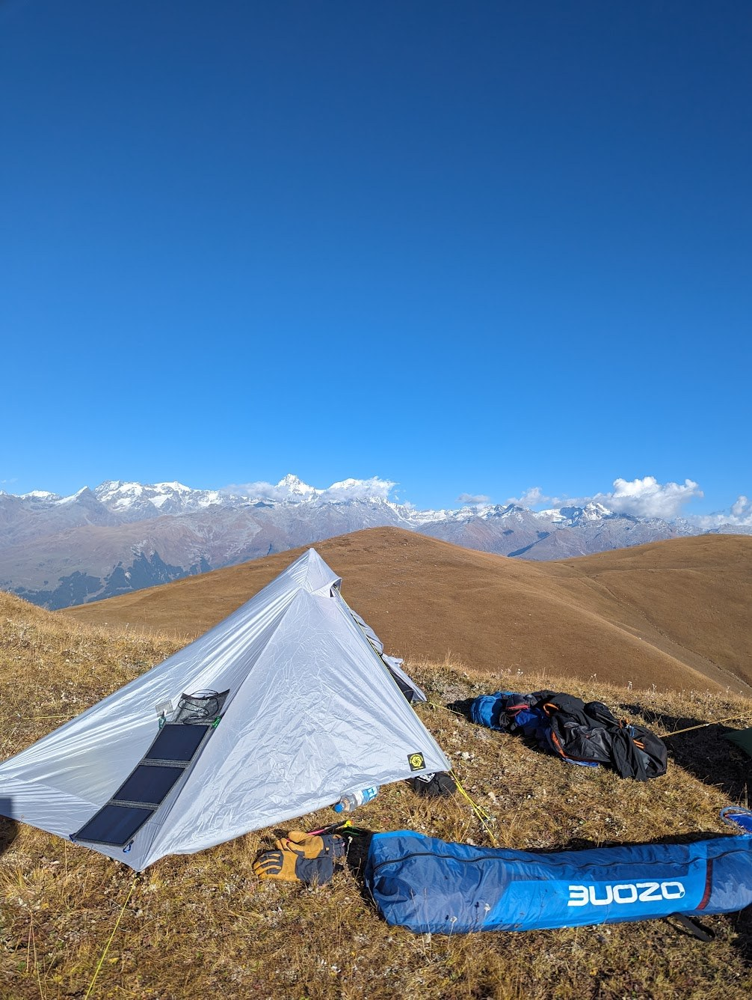
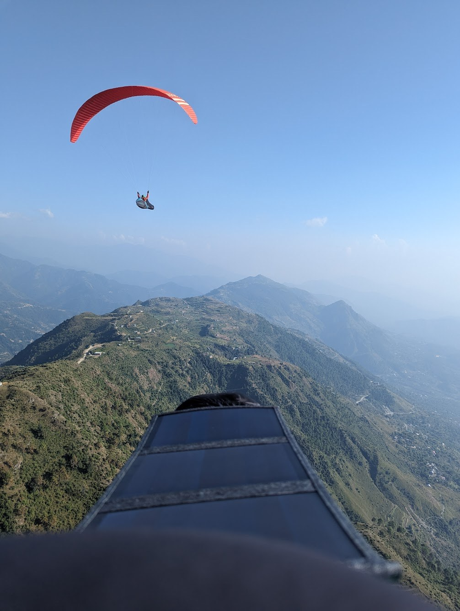
Bir Billing
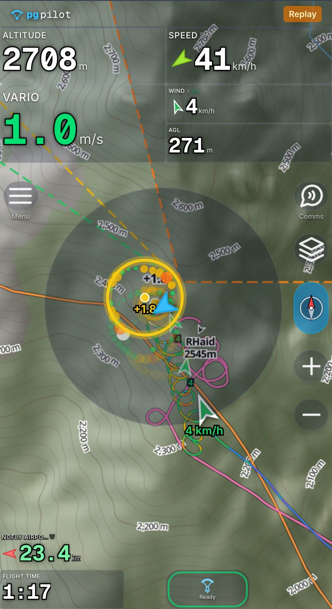
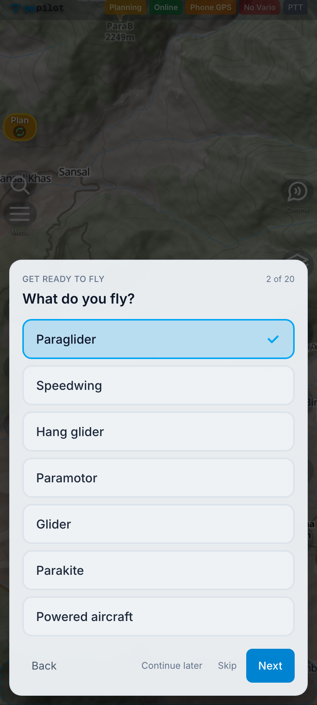
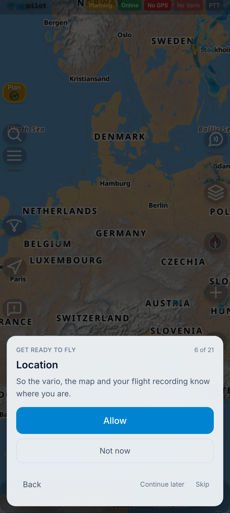
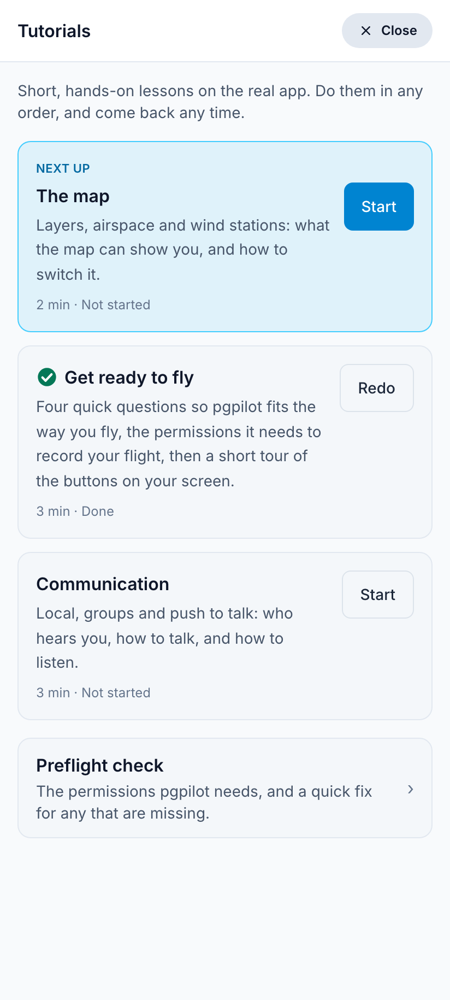
pgpilot.app/join/bir
Scan, type your name, done.
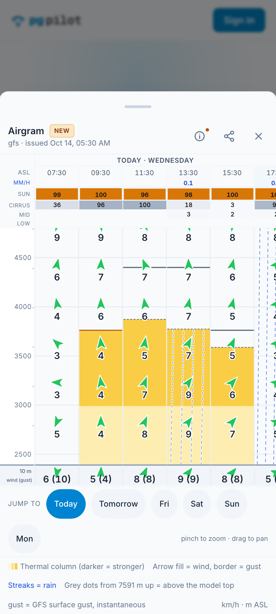
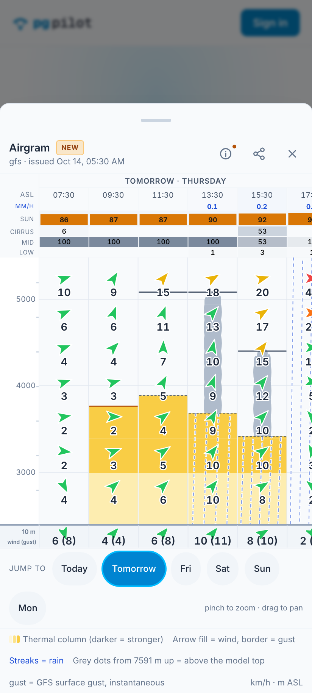
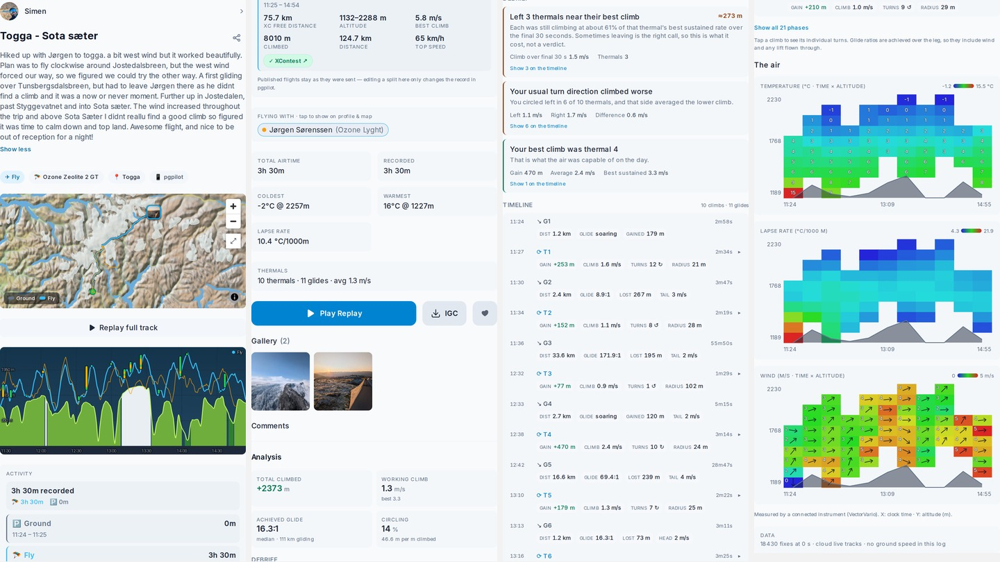
VHF
Voice, when nothing else works. A KV4P radio straight on the phone.
LoRa
Position and short text with no infrastructure. FANET and Meshtastic.
Satellite
When there's no coverage at all. InReach.
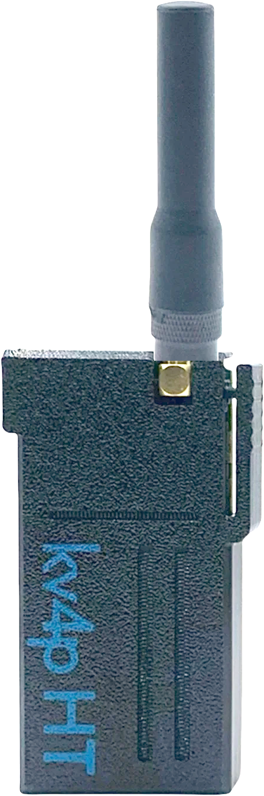
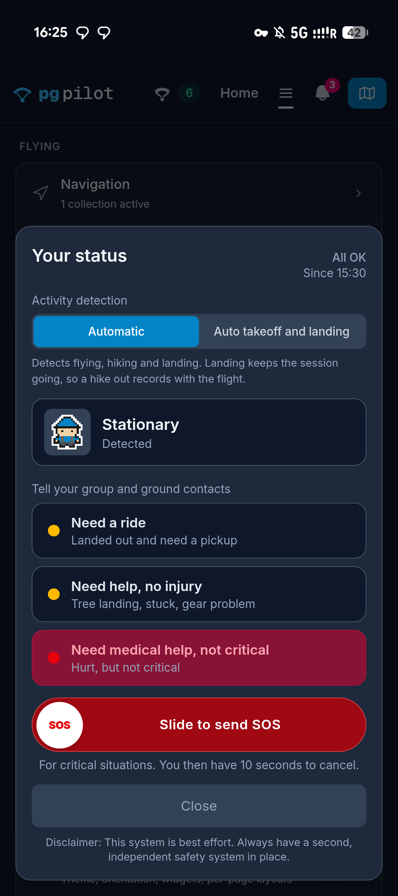
Garmin InReach MapShare
Under Connected services you enter your MapShare name, the part after share.garmin.com/, once.
Inbound, not outbound
The app pulls your satellite position into pgpilot. It is not a channel we transmit to, and not messages or SOS.
For the others
Your position lands on everyone else's map even where there's no cell coverage at all, and someone at home can follow the dot.
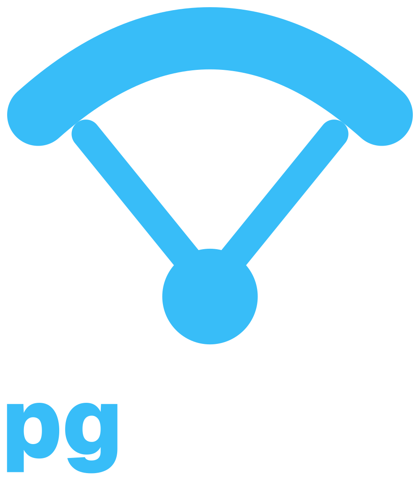
Thank you
pgpilot.app